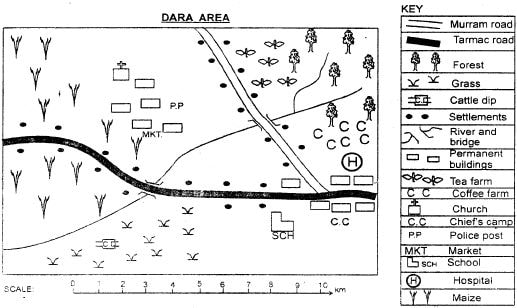
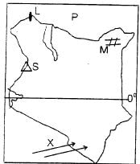
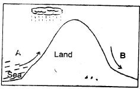

Use the map of Dara area to answer questions 1-71. What is the direction oi the church from the school?
C). North West2. The type of settlement in Dara area can be described as
A). linear3. Dara area is likely to be a?
B). location4. People of Dara area are mainly?
D). Christians5. Dara town has developed mainly because of?
C). road junction6. Which of the following economic activities is not carried out in Dara area?
A). Mining7. The climate of the North Eastern part of Dara area is?
A). cool and wet8. Which of the following is not an element of a good map?
B). Shape9. Members of the county assembly are elected by?
B). voters10. Which of the following is the largest language group in Kenya?
C). Bantu11. Which of the following rivers drain in the Indian ocean?
D). Tana12. Which of the following cannot have its symbol on the key of a map?
C). Margin13. Which of the following points of the compass is between North and North west?
A). NNW14. Which of the following is the largest relief region in Kenya?
B). Plateau15. Yatta, Merti and Lerochi are examples of
B). plateaus16. Which of the following is not a drainage features?
B). Mountains17. Which of the following is not a characteristic of tropical climatic region?
D). The temperatures are low
18. The border country marked P is
C). Ethiopia19. The feature marked S is?
A). Mt. Elgon20. The line marked 0°is known as?
A). Equator21. Town L is in which county in Kenya?
D). Turkana22. The feature marked M is known as?
A). Awara plains23. Which language group entered Kenya through the route marked X?
C). Bantus24. Which of the following communities does not belong to the coastal Bantu?
A). Abagusii25. The following are factors that influence population distribution EXCEPT?
C). longitude26. The approximate size of Kenya is?
B). 582,000km227. Why is important to have a title on a map?
A). It shows the area represented by the map28. The long rains in Kenya are experienced between?
A). March - June29. The following are ways through which people interact today EXCEPT?
B). raids30. African traditional education took place _____
C). throughout one’s life31. The following are factors that favour the growth of a certain crop;
(i) warm temperatures of about 25°c
(ii) moderate rainfall between 500mm - 100mm per year
(iii) Well drained fertile soils
(iv) flat land where irrigation is carried out
The crop is likely to be be? C). rice32. Which of the following is not a traditional industry?
C). Glass making33. The following are problems facing dairy farming EXCEPT?
B). shortage of labour34. Low and forests in Kenya are MAINLY found in?
B). Coastal region35. Acacia and Baobab trees are mainly found in _____ vegetation.
A). savannah36. The original homeland of the Luo was?
C). Bar-el-Ghazel37. Which of the following economic activities is most suitable where farms are small?
D). Poultry farming38. Black cotton soils are suitable for growing?
C). cotton
39. The side marked A is suitable for?
D). lumbering40. The following counties experience the type of rainfall shown EXCEPT?
B). Kisumu41. The following are aspects of our culture that should be preserved EXCEPT?
B). wife inheritance42. Which one of the following is the MAIN factor influencing population distribution in Kenya?
B). Climate43. The slopes of a rift valley are referred to as?
A). escarpment44. Which of the following is an example of a fresh water lake?
C). Turkana45. Who is the head of state in Kenya?
C). President46. Which of the following elements of weather is measured by a thermometer?
A). Temperature47. Kenva is divided into ____ counties
B). 4748. The district officer is the head of a?
A). division49. ______ is cutting down of trees without replacing them.
A). Deforestation50. Which of the following statements best gives the meaning of soil erosion?
D). Carrying away of top fertile soil by water and wind51. Which of the following trees is a softwood?
B). Eucalyptus52. Hills that are found isolated in the plateau region are known as?
C). inselbergs53. A place where a river starts is known as its?
D). source54. A land breeze occurs during the?
A). night55. Who was the third president of Kenya?
A). Mwai Kibaki56. Which one of the following is not an artifact that was used during war?
B). calabash57. In which year did Kenya become independent?
C). 196358. Who appoints the members of the county executive committee?
C). Governor59. A group of hills is known as?
B). ranges60. Who is a representative of the national government at the county level?
D). County commissionerSECTION B
CHRISTIAN RELIGIOUS EDUCATION
61. On the fifth day God created?
D). sea creatures62. The first passover feast was celebrated in?
B). Egypt63. Which one of the following does not show human beings taking care of God's creation?
B). Ploughing near river banks64. The following are examples of physical growth EXCEPT?
C). Change in mood65. Noah was saved during the floods mainly because?
C). he trusted God's word66. Which one is the sixth commandment?
D). Do not steal67. Who among the following prophets was chosen by God when he was still young?
C). Jeremiah68. “I am fearfully and wonderfully made.” Who said these words?
A). David69. During the passover, the Israelites ate all the following EXCEPT?
B). bread with yeast70. Which one of the following books of the Bible is NOT a gospel?
D). Exodus71. The message of John the baptist was about?
B). repentance and baptism72. According to prophet Jeremiah, the new covenant will be written _____
C). in people's hearts73. Which one of the following does NOT describe a true witness?
B). A person who gives witness in court74. Which one of the following is not a truth from the apostles creed?
C). Jesus resurrected on the fourth day75. The Holy spirit came down in the form of a dove during the?
A). the baptism of Jesus76. The following are fruits of the Holy spirit EXCEPT?
D). faith77. The parable of the lost son teaches Christians about?
C). repentance and forgiveness78. Jesus healed a man with evil spirit on a sabbath of?
A). Capernaum79. By helping a man with demons. Jesus showed that?
C). He had power over evil spirits80. Jesus had the last meal with his disciples at?
D). Jerusalem81. In African traditional societies, children were taught through?
B). storytelling82. In African traditional societies, people worshipped in shrines because?
B). they were God’s dwelling places83. During which of the following rites of passage in African traditional societies was dowry paid?
C). Marriage84. People who told about the future in African traditional societies were called?
A). prophets85. Which one of the following can lead to child abuse?
B). Death of parents86. Parents can help maintain peace at home by?
C). providing for the family needs87. Christians can strive to lead a righteous life by doing all the following EXCEPT?
C). revenging88. A good youth leader should do all the following EXCEPT?
D). praise oneself89. Christians can show respect to the authority BEST by
D). being obedient90. Jane, a standard five pupil likes abusing other pupils in her class. Which one of the following Christian values does she lack?
A). Humility